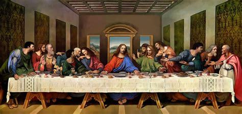
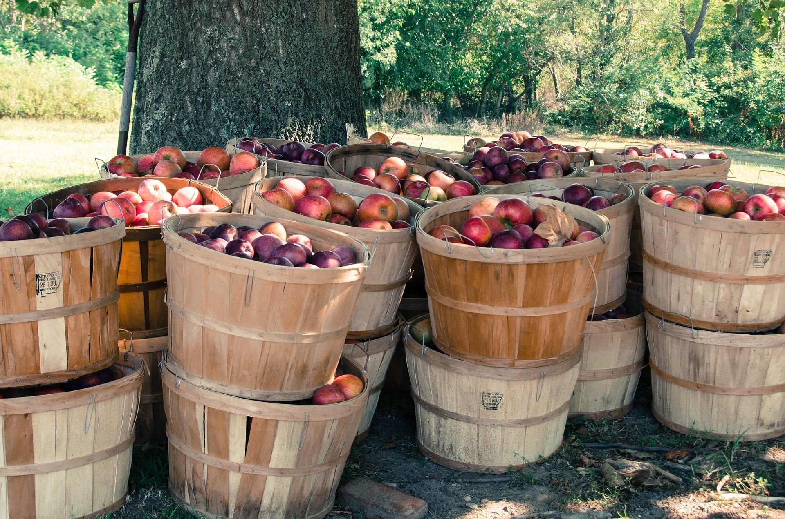

chapter15.1--handout
Background Information
Mass （天主教）弥撒
There were many people at the eleven o'clock mass.（十一点钟的弥撒有很多人。）
Going down the streets in the morning on the way to mass in the cathedral, I heard them singing through the open doors of the shops.（上午，我穿过几条街道到大教堂去看弥撒，一路上我都听见从敞开着门的酒馆里传出他们的歌声。）
mass 指“弥撒”，是天主教的宗教仪式 。mass原来在拉丁语里的意思是“聚会，聚集”。古代教会举行感恩祭，礼仪结束时，都要向参礼者说：“Ite，Missa，est!”（"Go; the dismissal is made"）意思是：“去吧，弥撒礼成（此即聚集）!”这样久而久之，“弥撒”便成了感恩祭的代用名称。
在新教（The Protestant Church）里一般不用“弥撒”这个词，而是说“礼拜”（worship service）.
弥撒的传统来源于《圣经·新约》里“最后的晚餐”（The Last Supper）. 根据福音书记载，耶稣在受难前夕的晚餐中，分别拿起麦面饼和葡萄酒，并称饼为自己的身体（bread the sacrificial body），而酒就是自己的血（wine the sacrificial blood），然后依次分给十二个门徒（apostles）. 并且命令门徒之后都要这么做，来纪念他的牺牲。在晚餐后，耶稣即被罗马士兵逮捕并送上十字架。

弥撒每周日在教堂进行，遇上特别的节日比如复活节、圣诞节，仪式会更加隆重。重要的环节有：进堂仪式（introductory rite）、神父讲道（sermon）、圣餐仪式（Eucharist）（以一小块饼和一小口红葡萄酒作为耶稣基督的身体和血，吃了以后就和耶稣同在，获得救赎）、礼成式（concluding rite）.
Riau-riau（圣福明节传统）
They were playing the riau-riau music, the pipes shrill and the drums pounding, and behind them came the men and boys dancing.（他们在吹奏riau-riau舞曲，笛声尖细，鼓声咚咚，大人小孩跟在他们后边边走边舞。）
riau-riau 是属于圣福明节的一种重要庆祝形式。按照传统，在圣福明节第一天（即7月6日）下午4点半，每个人都要到大街上参加游行庆祝（procession）, 一路载歌载舞（乐队主要由横笛fife、风笛reed-pipe以及鼓drum组成）。
从1914年开始，riau-riau开始变成了一项官方的仪式（an official event）, 也就是市政当局的官员（city hall councilors）在这一天需要全副盛装出席，从市政厅一直步行到教堂（大约500米），一路上还会有很多民众夹道欢送。
比如今天的内容也提及了这个场景：That afternoon was the big religious procession. San Fermin was translated from one church to another. In the procession were all the dignitaries, civil and religious. We could not see them because the crowd was too great.
后来由于受到反当局的动乱分子的干扰和阻挠，这项传统从1991年开始被搁置。直到1997年再次恢复，但已经不再是官方日程上的活动了。
Vocabulary
assimilate
vi. & vt. 同化，（使）融入（to become similar to one's environment）
原文：People had been coming in all day from the country, but they were assimilated in the town and you did not notice them.
整整一天，人们从四乡络绎不绝地来到，但是他们和城里人杂处在一起，并不受人注目。
💧assimilate 在这里指“融入（某一群体）”，另外这个词还可以表示“吸收、充分理解”（to fully understand an idea or some information so that you are able to use it yourself）, 比如：The committee will need time to assimilate this report.
委员会需要时间来吃透这个报告。
dignitary
n. 高僧；高官；显要人物（someone who has an important official position）
原文：In the procession were all the dignitaries, civil and religious.
世俗显要和宗教名流全都参加游行。
💧dignitary 指“达官贵人”（a person who has an important official position）, 比如：Flowers were presented to visiting dignitaries.
到访的各位要员收到了献上的鲜花。
Crush Your Problems

They could not start in paying café prices. They got their money's worth in the wine-shops.
他们一开始可受不了咖啡馆的要价，在那些小酒馆里才觉得钱能顶钱用。
💧表达精讲
got their money's worth 也就是指“钱花得值当”，worth表示“价值，意义”（how good or useful something is or how important it is to people）, 可以理解为value. 比如：The new computer system has already proved its worth.（新的计算机系统已经证明了它的价值。）
如果大家没有忘记Jake和Bill在去Burguete的公车上农民们用羊皮囊大口喝酒的画面，就可以理解为什么酒馆是更受他们欢迎的地方了。


Money still had a definite value in hours worked and bushels of grain sold.
金钱对于他们来说仍然意味着劳作了多长时间和售出了多少蒲式耳粮食。
💧表达精讲
这一句可以进行改写来帮助理解：The worth of money is still to a certain extent evaluated according to how many hours spent on working and how many bushels of grain are sold.
也就是说对于这些农民而言，他们通过付出了多少劳动时间并且卖出了多少粮食得到的钱，一定也要用在价值相当的地方（花在咖啡馆里显然就是不值当的）。
💧知识拓展
Bushel 蒲式耳（缩写BU）是一个计量单位。它是一种定量容器,好像我国旧时的斗、升等计量容器。它的单位重量在磅和吨之间，1蒲式耳在英国等于8加仑（gallons），等于4配克（pecks）（英国容积计量单位），相当于36.3688升（litres）。在美国，1蒲式耳相当于35.238升。


The café was like a battleship stripped for action.
咖啡馆活像是一艘轻装简行马上要上阵的军舰。
💧表达精讲
①strip 有“脱掉（衣服）”的意思，但在这里是指“将（建筑物、汽车）搬空”（to remove everything that is inside a building, all the equipment from a car etc so that it is completely empty）, 比如：The apartment had been stripped bare.（公寓已被搬空。）
②action 有“战斗”（fighting）的意思，比如我们之前介绍过的一个表达man of action就是指“战士”。
这里是在调侃咖啡馆把大理石面的咖啡桌和白色的柳条椅（marble-topped tables and the white wicker chairs）换成了铸铁的桌子和简陋的折叠椅（cast-iron tables and severe folding chairs）（severe在这里指“朴素的”，very plain with no decoration）. 同时也暗示了节日的盛况，很多人都会涌到大街上和咖啡馆里。

The ball of smoke hung in the sky like a shrapnel burst, and as I watched, another rocket came up to it, trickling smoke in the bright sunlight.
这团悬在空中的烟雾像枚炸开的榴霰弹，我正在观看的当口，另一颗焰火弹又蹿上了天，在明亮的天光下吐出缕缕青烟。
💧表达精讲
trickle 表示“使……呈小股流淌”，比如：Trickle some oil over the salad.（往色拉上滴些油。）这里trickle smoke也就是指“烟成细缕状升起”。
💧知识拓展
shrapnel（榴霰弹）在十九世纪初期就已经被发明出来，但是直到该世纪末才真正成为一种可靠的武器，并且在一战中广泛使用。榴霰弹外部是一层薄薄的金属壳，里面装满重量8～10公克的金属弹丸与一根引信，在理想状态下榴霰弹会在敌军步兵前方上空数公尺处引爆，像一把超大型散弹枪把金属弹丸洒在敌人身上。

It seemed out of place to think of consequences during the fiesta.
狂欢期间，考虑后果似乎是不合时宜的。
💧表达精讲
out of place 表示“不恰当，不合时宜的”（Not appropriate for or fitting with the current surroundings or environment）, 比如：I'm afraid your type of humor might be a little out of place in such a formal venue.（恐怕在正式场合你的这种幽默是有点不恰当的。）
如果说sb feel out of place就是“感觉不自在”（awkard and unwelcome）的意思，比如：I feel out of place at formal dances.（我在正式的舞会上感觉不自在。）

They wanted her as an image to dance around.
他们要把她当作一尊偶像来围着她跳。
💧知识拓展
image 在宗教中指“偶像”，即除了“耶和华”（对上帝的另一个称呼）以外的异教神都属于偶像。在《圣经》的十诫中有明确提及这一点：“不可为自己雕刻偶像，也不可作什么形像仿佛上天、下地，和地底下、水中的百物。不可跪拜那些像，也不可侍奉他，因为我耶和华—你的神是忌邪的神。”
在Jake看来，这些天主教徒们围着Brett跳舞无异于把她当成一尊偶像来崇拜，并且Brett本身还是一个异教徒（在天主教的信仰中，不信耶和华的都算作异教徒——pagan）.
Content Analysis
狂欢节的第一天上午，首先迎来的是天主教教堂中的弥撒（There were many people at the eleven o'clock mass. San Fermin is also a religious festival）, 接着一颗焰火弹升空宣布狂欢节正式开始（the rocket that announced the fiesta went up in the square）. 人们都涌上街道参加游行，伴随着音乐和舞蹈（They were playing the riau-riau music, the pipes shrill and the drums pounding, and behind them came the men and boys dancing）.
根据Jake的描述，狂欢节就这样歌舞喧哗不停地持续了七天。并且他还提到了，所有这些发生的只有在狂欢节上发生（The things that happened could only have happened during a fiesta）, 当人们身在其中的时候，对事物的判断和价值观等都跟平时不太一样——
💧Clue 1:The fiesta changes people's values.
Evidence 1:Money still had a definite value in hours worked and bushels of grain sold. Late in the fiesta it would not matter what they paid, nor where they bought.
金钱对于他们来说仍然意味着劳作了多长时间和售出了多少蒲式耳粮食。以后等到狂欢节高潮的时候，他们就不在乎花多少钱，或者花在什么地方了。
Jake提及的 一个例子是从乡下来的农民们：他们最开始只愿意到酒馆里去消费，因为他们依然是以自己的劳动时间和卖出去的粮食来衡量金钱的价值。但沉浸在狂欢节之后，他们的这个观念就会被改变（他们也会开始觉得上咖啡馆是可以接受的）。
这种消费理念和昨天的内容中提到的“等价交换”是相冲突的（You could get your money's worth）, 因为在这里的情况中，付出和得到并不等值。同时也印证了Jake本身对这套人生哲学的怀疑（In five years, I thought, it will seem just as silly as all the other fine philosophies I've had）.
另一点值得注意的是，Jake在对狂欢节的描述中，还涉及到了很多和战争相关的用语，这也从侧面反映了战场上的经历始终在他的潜意识里徘徊——
💧Clue 2:The war memory still haunts Jake.
Evidence 1:They were replaced by cast-iron tables and severe folding chairs. The café was like a battleship stripped for action.
铸铁桌子和简陋的折叠椅被换了上来。咖啡馆活像是一艘轻装简行马上要上阵的军舰。
Evidence 2:The ball of smoke hung in the sky like a shrapnel burst...
这团悬在空中的烟雾像枚炸开的榴霰弹……
从其他细节处也可以看到Jake有意无意地把狂欢节和战争联系在一起，比如狂欢节的高涨和持久（It kept up day and night for seven days. The dancing kept up, the drinking kept up, the noise went on）, 以及狂欢节的虚幻和放纵（The things that happened could only have happened during a fiesta. Everything became quite unreal finally and it seemed as though nothing could have any consequences）.
大家可以再回到原文仔细品味这一段话，它几乎也能完美地用来形容战争的性质——激烈、持久、高昂、不计代价和后果。这在一定程度上也解释了Jake为什么深为狂欢节着迷并且每年都前来参加。
Today's Bonus
💧最经典的交谊舞
在今天的游行当中，令人瞩目的还有几尊足有三十英尺高的巨像，他们随着舞曲旋转着，就像在跳华尔兹一样（the great giants, cigar-store Indians, thirty feet high, Moors, a King and Queen, whirling and waltzing solemnly to the riau-riau）.
这里提到的华尔兹可以算是最经典并且历史最久的交谊舞（ballroom dance）了，我们之前介绍过的交谊舞还有狐步舞（Fox-trot）, 当然这已经是在华尔兹之后才出现的了。今天再给大家讲一讲几个经典交谊舞的诞生以及流行的过程~
1. Waltz 华尔兹
华尔兹又叫“圆舞”，既可以双人也非常适合在舞厅（ballroom）里自娱。华尔兹起源于1780年，Waltz这个名称最初来自于德文，意思是“滚动”“旋转”或“滑动”。但是在这之前，以三拍子“蓬嚓嚓”为节奏的圆舞很早之前就流行于欧洲，特别是在德国巴伐利亚和奥地利维也纳一带的农民中。我们平时说的“快三”、“慢三”也就是在指华尔兹的两种速度。
在华尔兹之前，城镇里的居民一般兴跳传统的民族舞曲，比如小步舞和加伏特舞等。但它们太过刻板和拘谨，不能适应18世纪后人们对艺术趣味的新要求，而华尔兹则更加轻松自然、飘逸洒脱。但这也为华尔兹在一开始出现的时候招来了不少谩骂，尤其是在比较保守的英国，有人认为这种自由奔放是违背道德的甚至不文明的。
1834年后，华尔兹传到了美国。它在美国的第一个落脚点是波士顿，随即传到了纽约和费城。到19世纪中叶的时候，华尔兹已经风靡席卷了美国的社交圈。
2. Tango 探戈
探戈是一种双人舞蹈，起源于非洲中西部的民间舞蹈探戈诺舞，探戈是摩登舞中较为特殊的舞蹈，也是摩登舞中唯一一个带有拉丁特色的舞蹈。16世纪末到17世纪初，随着黑奴贩卖进入美洲，融合了拉美民间舞蹈风格，形成了舞姿优雅洒脱的墨西哥探戈和舞姿挺拔、舞步豪放健美的阿根廷探戈随后传入欧洲，并不断融合发展至今。
探戈据说是情人之间的秘密舞蹈，男士原来跳舞时都佩带短刀。后来即便不佩带短刀，舞蹈者也必须表情严肃，表现出东张西望，提防被人发现的表情。
探戈舞步最显著的特点是“蟹行猫步”。当舞步需要前进时，舞者却作横行移动；当舞步需要后退时，舞者却作横向向前斜移。同时，探戈舞者的舞步常常随音乐节拍的变化而时快时慢，探戈也因此被称为“瞬间停顿的舞蹈”。
3. Quickstep 快步
快步也称“快狐步”。在1923年左右起源于美国。采用的是比较快的4/4拍子音乐，还有着自己独特的舞步。快步舞和狐步舞都来源于狐步舞，只是因为一快一慢而演变成了不同的舞种。
快步的基本舞步是并合步（Chasse）、波格（Polka）、锁步（Lock）和一些华尔兹舞步。快步动作快速、机灵、起伏、弹跳敏捷，舞姿活跃动人，风格高贵优雅。
4. Blues 布鲁斯
我们一般说的“慢四”其实就是布鲁斯舞。布鲁斯是英文Blues的音译。布鲁斯舞曲来源于美洲丛林中黑色人种的有忧伤感的乐曲Blues，20世纪初流行于欧洲，传入英国以后，被改变成慢速稳健的舞厅舞。
布鲁斯舞步很简练，但举步庄重，保留着宫廷色彩和古典风韵。它的节奏与动作变化不大，进退平稳，跳起来从容不迫，给人以舒适、悠闲、平和、自由之感。其舞步易于掌握，具有斯文、高雅的气度，因而有“标准桥梁”的雅号，并被称为启蒙舞蹈。
以上介绍的都属于现代的交谊舞，后来的交谊舞则以拉丁舞为主，比如伦巴（Rumba）, 恰恰（Cha Cha Cha）, 桑巴（Samba）, 斗牛（Paso Doble）, 牛仔舞（Jive）等等，这些舞蹈风格带着拉丁民族特有的热情奔放，如果能掌握一种也是可以在舞会上羡煞旁人的哦~